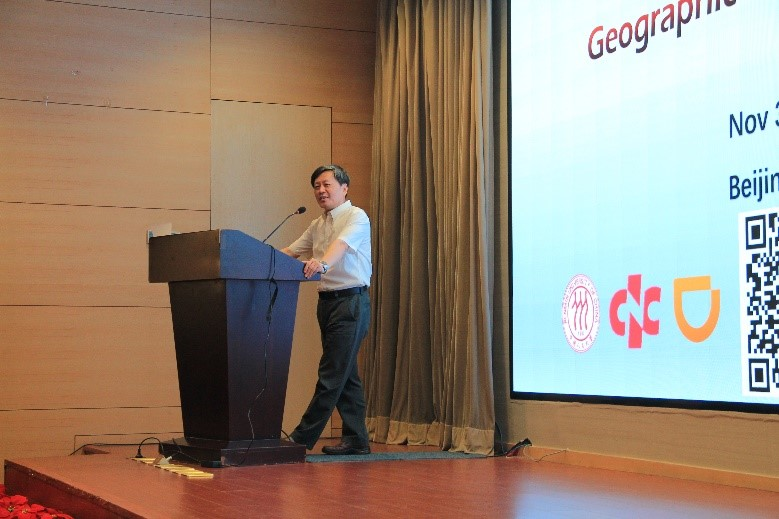
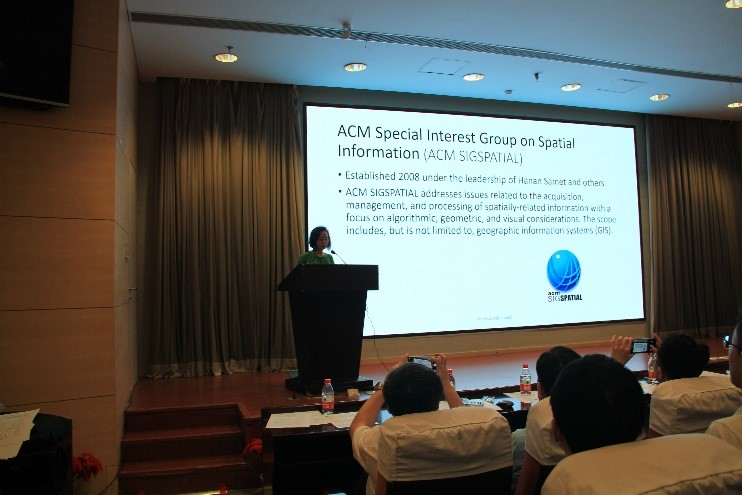
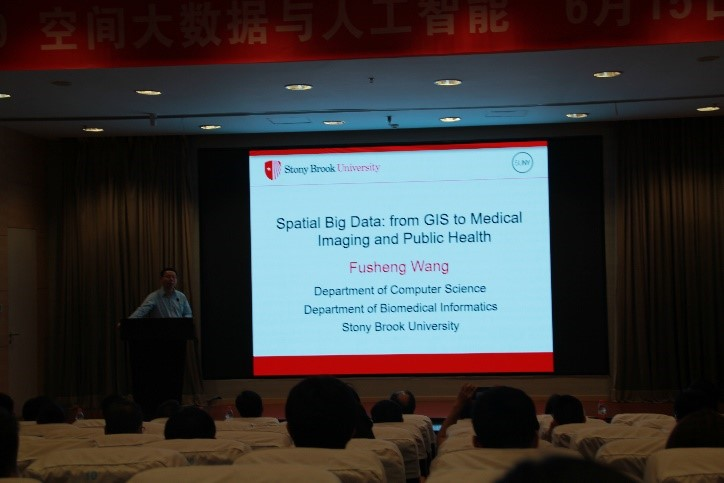
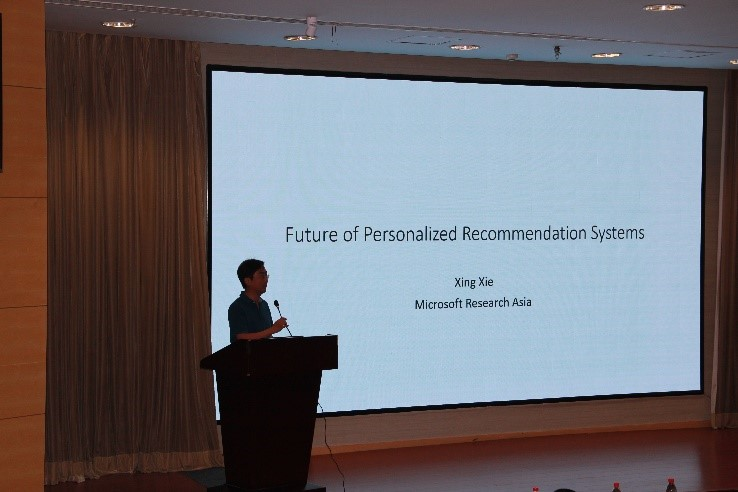
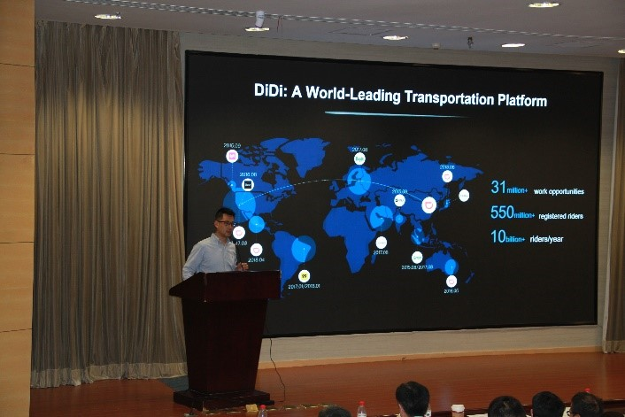
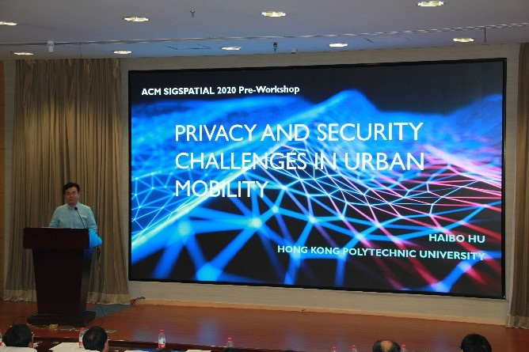
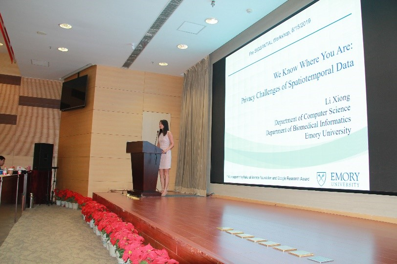
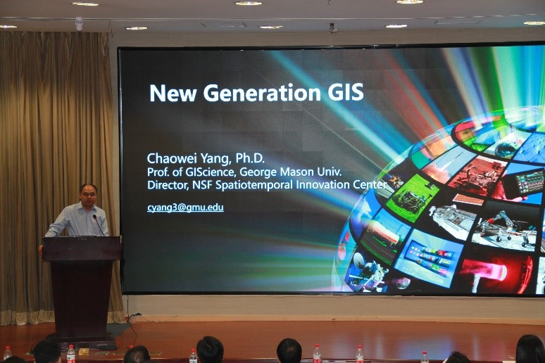

Contents
Activity
ACM SIGSPATIAL 2020 Pre-Workshop成功举办
导言：
2019年6月15日，ACM SIGSPATIAL 2020 Pre-Workshop在中国科学计算技术研究所成功举办。本次会议主题为“Big Spatial Data, Geospatial AI, Smart Cities, Digital Earth and Beyond”，大会邀请了六位工业界和学术界的专家和学者进行主题报告，探讨时空大数据的应用、挑战和前景，交流学术思想和方法，为ACM SIGSPATIAL 2020正式会议的举办做积极的探索和充足的准备。
正文：
本次会议由中国人民大学孟小峰教授主持，吸引了学术界和工业界百余人参加。孟小峰教授在开场致词中表示，由于先前十分荣幸地争取到ACM SIGSPATIAL 2020会议的举办权，本次会议的主要目的是讨论如何办好ACM SIGSPATIAL 2020。其次，孟小峰教授指出当前正是空间大数据发展的黄金时期。在空间信息的研究早期，研究条件较为艰苦，多靠研究人员的“空想”，但即使如此，作为两个Chapter之一的中国地区依然投入了大量的时间在此项工作上。随着空间信息的飞速发展，数据爆炸式增长，一方面，很多早期成果被证明其有效性和正确性，表明了 SIGSPATIAL对早期的空间信息探索研究所起到的不可估量的作用；另一方面，以滴滴、微软、阿里等为代表的工业界对空间大数据产生大量需求和应用，空间大数据的黄金时期也随之到来。最后，孟小峰教授对ACM SIGSPATIAL会议首次在中国举办做出展望，希望在筹备过程中积极做好与各方的沟通，在大会举办过程中展现中国实力。

本次会议分Invited Talk、 滴滴参观、Panel Discussion三个部分进行，积极探讨了当前时空大数据的应用与挑战，就如何办好第28届ACM SIGSPATIAL达成一致。
Invited Talk
本次会议邀请了学术界和工业界六位学者和专家就SIGSPATIAL会议情况和空间大数据发展状况做主题报告，分享了当前空间大数据的前沿课题、关键技术及发展趋势。
▲ Introduction to SIGSPATIAL - Yan Huang
作为多届ACM SIGSPATIAL执行委员会成员、大会主席的北田纳西大学的黄艳教授，首先对ACM SIGSPATIAL GROUP和SIGSPATIAL CONFERENCE的历史和发展做了简要的介绍。该组织起初为解决空间信息的获取、管理和处理问题而成立，重点关注算法、几何、和视觉等方面。于2007年成为独立会议，2008年正式命名为ACM SIGSPATIAL，以顺应空间及探测技术的飞速发展趋势。2008至2018年间，该会议的参会人数、论文提交数量逐年上升，影响力不断扩大。2020年该会议将首次在中国举办，于此，黄艳教授表达了希望以创新的会议形式和会议规模扩大其在中国知名度的美好期望。

▲ Spatial Big Data: From GIS to Medical Imaging and Public Health - Fusheng Wang
来自石溪大学生物医学信息学系和计算机科学系的汪富生教授在本次报告中分享了空间大数据在医药图像处理和公共健康领域应用的挑战和最新研究进展。其中，主要挑战包括其高吞吐量需求应对超大规模数据的挑战、高性能需求对高时间复杂度的挑战、数据整合中对多源数据的挑战、以及分析处理与实时处理的挑战。在应对技术上，主要采用切片技术及应用GPU进行加速优化。在应用上，可以使用空间数据完成电子诊断、病人预测，通过机器学习方法做风险预测等。

▲ Future of Personalized Recommendation System - Xing Xie
微软亚洲研究院首席研究员谢幸主要报告了个性化推荐系统的现状和未来。深度学习与推荐系统的结合依旧是以微软为代表的工业界的研究重点，当前该方向的主要问题是技术的落地问题，即如何与微软其他产品、项目与工程结合。同时，知识图谱与推荐系统的结合，可以有效提高推荐性能，提供个性化产品。最后，谢幸对机器学习的“可解释”进行介绍，分析了当前可解释机器学习常用的两种技术方案，探讨了机器学习可解释性和透明性对推荐系统和企业产品发展的重要意义。

▲ Towards the Future of Intelligent Transportation - Tiger Qie
滴滴出行副总裁、滴滴智慧出行业务负责人郄小虎从滴滴的共享出行平台和海量时可大数据出发，介绍了滴滴科技的战略布局和AI布局。在AI布局中，该负责人主要介绍了“智慧赋能交通”和“滴滴智能交通大脑”，就人工智能技术在供需预测、拼车、路径规划、预估到达时间、推荐上车点、轨迹挖掘等网约车技术和地图服务方面的应用进行讲解。此外，滴滴在该报告中共享了滴滴的开源数据集“Large-Scale Driving Video Dataset”——GAIA Open Dataset，主要包括脱敏处理的成都和西安地区部分快车轨迹数据，为空间大数据的学术研究提供了丰富的实验数据。

▲ Privacy and Security Challenges in Urban Mobility - Haibo Hu
香港理工大学胡海波老师主要介绍了城市交通带来的挑战性问题，其中重点是位置数据的隐私与安全问题。针对前者，介绍当前主要应用的匿名化方法、假数据法和PMAC技术等关键技术；针对后者，主要介绍匿名化方法、Grid-hashing、以及基于Wifi、蓝牙信号的解决方法。除了位置数据外，应对城市交通中的数据隐私和安全问题的技术方案还包括基于硬件的保护方法和基于数据扰动的保护方法。

▲ From Location Traces to Medical Records: Privacy Challenges of Spatiotemporal Data - Li Xiong
美国埃默里大学熊莉教授在该主题报告中，介绍了空间数据面临的隐私挑战以及现今隐私保护的前沿技术。熊莉教授通过列举诸多实例，阐明了当今大规模数据收集现状及面临的隐私风险，并指出本地化差分隐私这一前沿隐私保护技术的优点。除此以外，熊莉教授介绍了联邦学习方法，通过该方法，互不信赖数据拥有者可以在不共享数据的情况下协作地进行数据分析，从而提供了一种隐私保护新思路。最后，熊莉教授介绍了实验室在时空数据场景下隐私保护的研究工作以及最新的研究进展，同时提出当前依然存在的开放性问题，令在场听众受益良多。

▲ New Generation GIS - Chaowei Yang
乔治梅森大学地理信息科学杨超伟教授针对新一代GIS的未来做了主题报告。面对当前GIS市场大、计算效率低、大数据难融合、难共享等问题，杨教授在全球调研的基础上，详细阐述了今后GIS的研究方向与目标，即围绕三个核心技术——时空计算、时空智能以及时空大数据，建立一个集成平台，实现在互联网领域以及面向自然资源、国家关系、农业等领域的广泛应用，力图通过时空大数据解决陨石撞击地球最佳应对措施、发射卫星等实际问题。

滴滴参观 & Panel Discussion
本次会议积极与工业界合作，共同探讨空间大数据研究的现状和未来方向，探索学术界和工业界的有效结合点。为此，在滴滴邀请下，演讲嘉宾和SIG SPATIAL 2020程序委员会参观滴滴，近距离感受时空大数据、地理空间人工智能在工业界的应用，聆听当前工业界对时空大数据的关注点、及挑战性问题，在同滴滴的交流中探讨学术合作的机会。
同日下午，滴滴出行主要负责人、演讲嘉宾、同SIG SPATIAL 2020程序委员会进行了Panel Discussion，主题是“如何办好中国特色的第28届 ACM SIGSPATIAL 2020"。该讨论由中国人民大学孟小峰教授主持，持续三小时，主要就会议的筹备、ACM SIGSPATIAL 2020 China Chapter换届及工作计划两部分议题展开。
在会议筹备的讨论中，首先对以往SIGSPATIAL会议的投稿量、举办情况等进行了分析，主要讨论了如何吸引更多学者参与SIG SPATIAL 2020、SIG SPATIAL 2020会议在北京的筹办与选址、竞赛GISCUP 2020的设计三部分内容。其中，独具特色的是SIGSPATIAL Preview的提出、Industry Day的提出、以及与滴滴联合发布脱敏数据集。本次座谈在SIGSPATIAL 2020会议形式上积极创新，融入中国特色，同时积极与工业界合作，力图创造更多学术界和工业界沟通交流的机会，从形式上和内容上有效促进SIGSPATIAL会议的发展，展示中国实力。
在ACM SIGSPATIAL China Chapter换届中，孟小峰教授接任SIGSPATIAL China Chapter主席，组成新的领导机构。之后，孟小峰教授提出未来的工作设想，积极与ACM SIGSPATIAL建立正常的联络关系，强调China Chapter委员之间要积极沟通，并确定参加明年ACM中国图灵大会，从而更好宣传明年在北京举办的SIGSPATIAL 2020。
总结
ACM SIGSPATIAL（http://www.sigspatial.org/）由国际计算机学会（Association for Computing Machinery, ACM）空间信息专业委员会（ACM SIGSPATIAL）主办，是GIS领域与计算机科学结合广泛的国际顶级会议。该会议第28届将首次离开美国，于2020年11月3日至6日在中国北京举办。本次Pre-Workshop积极探讨了解了当前空间大数据的应用及挑战，指出当前是空间大数据发展的黄金时期，SIGSPATIAL的发展将势不可挡，同时积极工业界合作，筹备中国特色的ACM SIGSPATIAL 2020。ACM SIGSPATIAL会议主题涵盖了时空数据挖掘、时空数据模型和算法、位置服务、地图匹配、分布式和并行计算、路径规划、轨迹计算等研究方向，具有重要的学术价值与应用价值，欢迎相关领域的学者和企业积极投递论文。
(撰稿人 : 王雷霞)
28th June, 2019